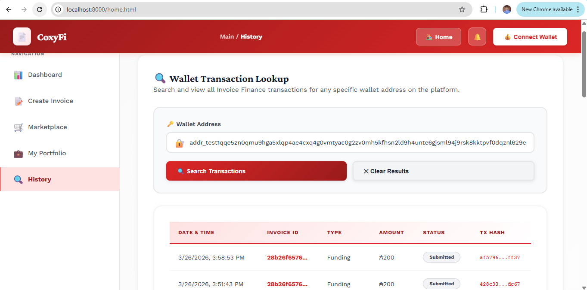

Coxyfi Manual
📊 Transaction History & Search
The transaction tools allow users to review recent platform activity, search transaction history by wallet address, and export records when needed.
Recent Transactions
- Use the recent activity area to view the latest invoice creation, funding, and repayment actions.
- Review transaction hashes for confirmation and external verification.
- Use this area for quick operational monitoring without searching manually.
Screenshot Placeholder

Suggested image: recent transaction table
History Search
- Paste a wallet address into the history search field.
- Run the search to load historical records associated with that address.
- Use the clear option to reset the results and perform a new lookup.
- Use CSV export when you need an offline copy of recent activity.